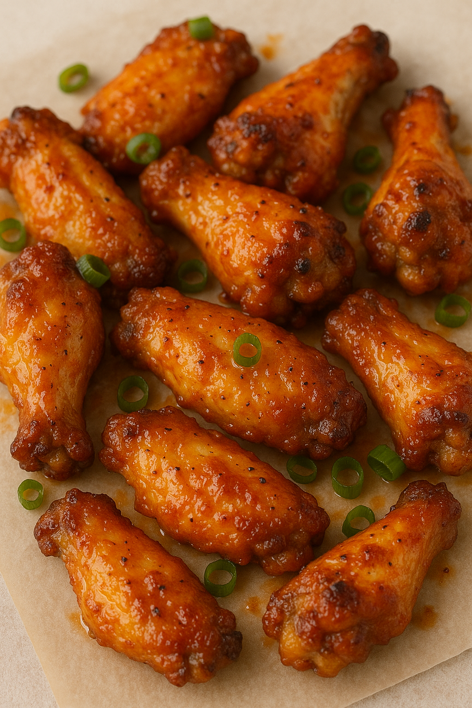

GPT Wings
Home

Description
Here's a bold and flavorful crispy baked chicken wings recipe that hits all the right notes—crispy, juicy, and packed with flavor.
Ingredients
- 2 lbs (about 1 kg) chicken wings, separated into flats and drumettes
- 1 tbsp baking powder (aluminum-free)
- 1 tsp salt
- 1 tsp garlic powder
- 1/2 tsp black pepper
- 1/2 tsp smoked paprika (optional but recommended)
Optional Wing Sauce
- 1/3 cup hot sauce (e.g., Frank's RedHot)
- 3 tbsp melted butter
- 1 tsp honey (optional for balance)
Cooking Instructions
- Prep the Wings:
- Pat the wings completely dry with paper towels (this is key for crispiness).
- Toss wings in a large bowl with baking powder, salt, garlic powder, pepper, and paprika until evenly coated.
- Bake:
- Preheat oven to 425°F (220°C).
- Place wings skin-side up on a wire rack set over a foil-lined baking sheet.
- Bake for 45–50 minutes, flipping halfway through, until crispy and golden brown.
- Make Your Sauce:
- While wings are baking, prepare your desired sauce.
- Combine sauce ingredients in a small pan over low heat. Simmer until blended (or thickened, if needed).
- Toss and Serve:
- Once wings are crispy, toss them in your sauce of choice, or serve dry with dipping sauce on the side.
- Garnish with chopped green onions, sesame seeds, or extra hot sauce if desired.